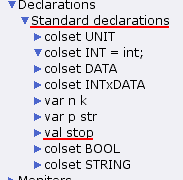
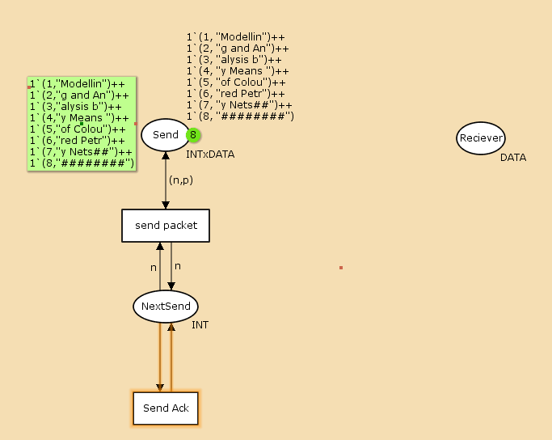
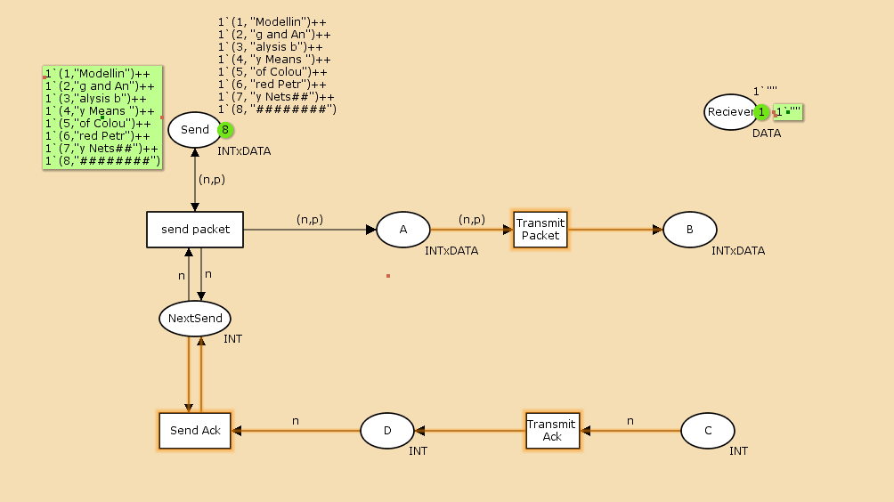
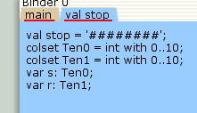
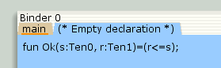
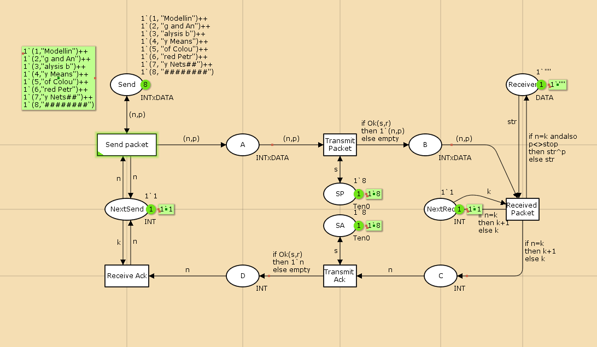
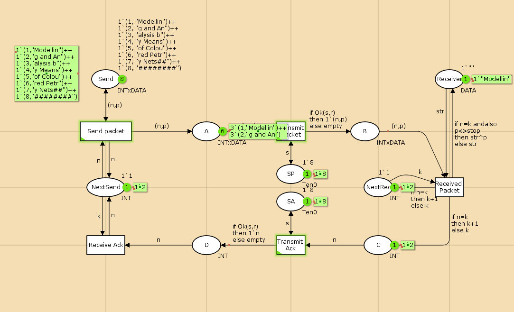
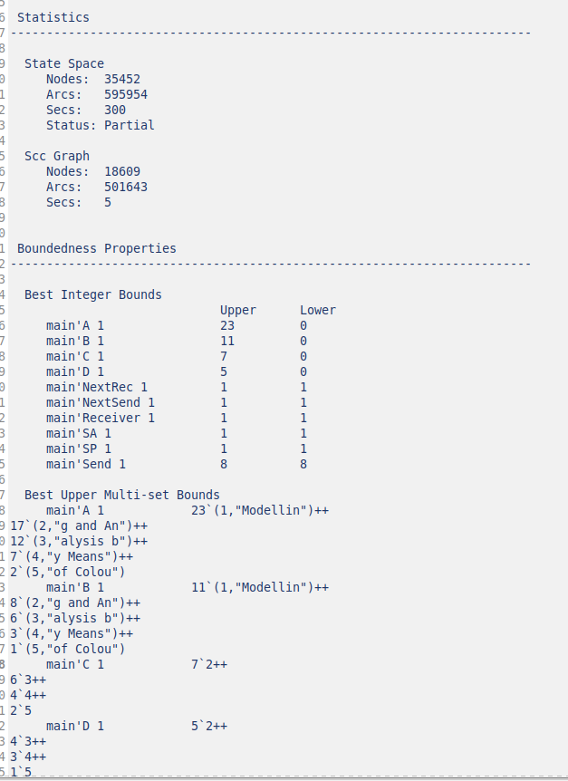
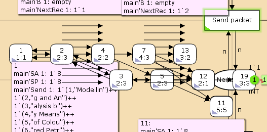

Реализовать простой протокол передачи данных в CPN Tools.
Задание
Реализовать простой протокол передачи данных в CPN Tools.
Вычислить пространство состояний, сформировать отчет о нем и
построить граф.
Выполнение лабораторной
работы

Задаем декларацию модели

Начальный граф

Граф со вспомогательными
состояниями

Дополнительная декларация

Функция

Готовая модель

Готовая модель в запущенном
состоянии
Упражнение

Файл отчета

Граф состояний
Вывод
В процессе выполнения данной лабораторной работы я реализовала
простой протокол передачи данных в CPN Tools и проведен анализ его
пространства состояний.
Библиография
Зайцев Д. А., Шмелева Т. Р. Моделирование телекоммуникационных
систем в CPN Tools. — Одесса : Одесская национальная академия связи им.
А.С. Попова,